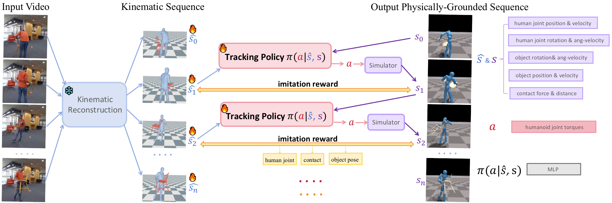
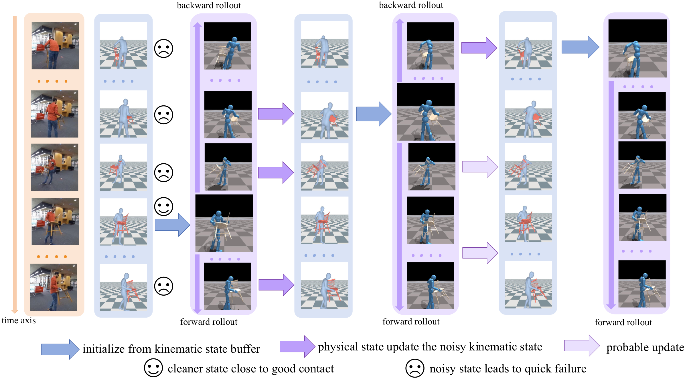

1University of Texas at Austin 2Shanghai Jiao Tong University
(1) We study recovery of physically plausible whole-body human-object interactions from monocular video.
(2) We start from noisy kinematic reconstruction and refine it with reinforcement learning in a physics simulator.
(3) We introduce adaptive sampling with dual propagation and kinematics updates to exploit reliable frames in noisy sequences.
(4) Our method improves physical plausibility metrics on both BEHAVE and InterCap while preserving strong 3D reconstruction quality.
In this paper, we present a method to reconstruct physically plausible human-object interactions (HOI) from monocular videos. While existing kinematic-based approaches produce visually plausible motion, they often result in physically implausible artifacts such as interpenetration and object floating. To overcome these issues, we introduce a physics-guided reconstruction framework. We begin with a kinematic estimate and then refine it by training a policy with reinforcement learning in a physics simulator. Because kinematic estimates are typically noisy, naive RL training can fail. We therefore propose an adaptive sampling strategy with a dual self-updating mechanism that identifies the most informative and reliable frames. Our process progressively improves reconstruction quality and yields physically consistent HOI sequences. We demonstrate clear improvements in physical plausibility metrics on BEHAVE and InterCap.

Overview of our two-stage pipeline. In the first stage, we use an off-the-shelf kinematic reconstruction method, VisTracker, to recover human-object interactions in global coordinates from the input video. These kinematic estimates are often noisy and may contain incorrect contact, penetration, or floating artifacts. In the second stage, we train a physics-based tracking policy to imitate the reference kinematics inside a simulator with reinforcement learning. The policy takes the current physical state and future reference states as input, and produces actions that preserve both motion fidelity and physical plausibility. Adaptive sampling, dual propagation, and kinematics updates make the training stable even when the input sequence is severely corrupted.

Overview of our dual propagation with kinematics update mechanism. Kinematic estimates from monocular videos are often highly noisy. Rollouts initialized from these noisy states typically fail quickly, whereas rollouts that start from frames with accurate contact configurations succeed for much longer. To propagate these physically plausible states across the sequence, we train two HOI tracking policies simultaneously: a forward policy that performs forward rollouts and a backward policy that performs backward rollouts. States from the successful portions of previous rollouts are used to update the corresponding noisy kinematic frames, and subsequent rollouts initialize from these improved states. Overall, this dual propagation and kinematics update mechanism enables the policy to learn from extremely noisy reconstruction results and gradually recover the entire HOI sequence in a physically plausible manner.
@inproceedings{huang2026physicalhoi,
title={Recovering Physically Plausible Human-Object Interactions from Monocular Videos},
author={Huang, Dingbang and Vouga, Etienne and Huang, Qixing and Pavlakos, Georgios},
booktitle={Proceedings of the IEEE/CVF Conference on Computer Vision and Pattern Recognition},
year={2026}
}